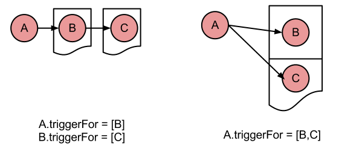

What is the difference between a chain of triggered actions and a list of actions trigged by one action?
The triggerFor is a list of actions. The actions linked in the triggerFor are performed after the original action
is performed. Let there be the following actions: A, B, and C. A.triggerFor = [B,C]. See as depicted below on right.

That means after A is executed B and then C will be executed.
But what is the difference between the setup on the left. Where B is triggered by A, and C is triggered by B?
The setup on the left will always perform C after B, since C is triggered by B. But in the set up on the right,
C is performed when A is performs. When B is performed on its own (not as a result of being triggered by A),
C will not perform.